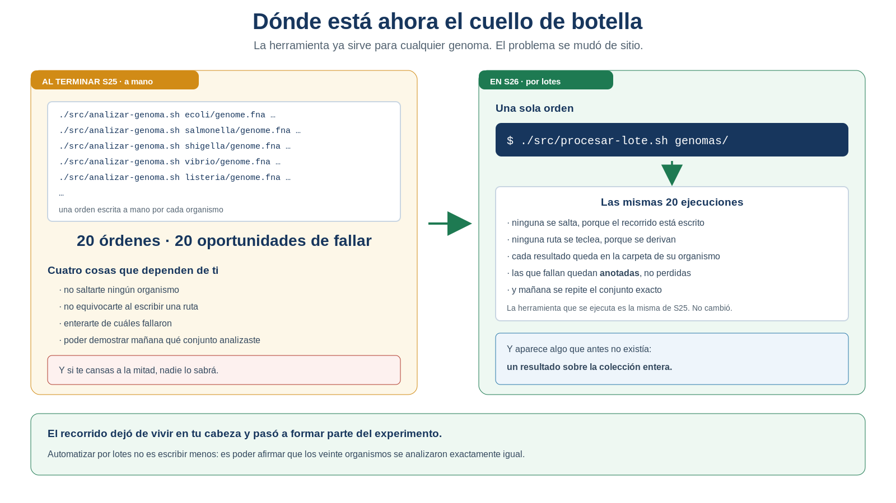
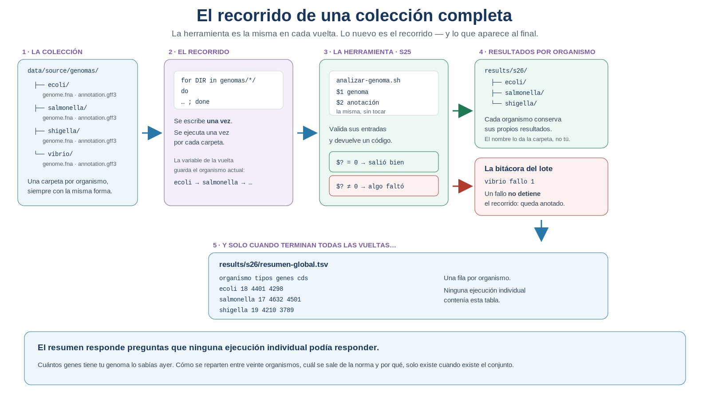
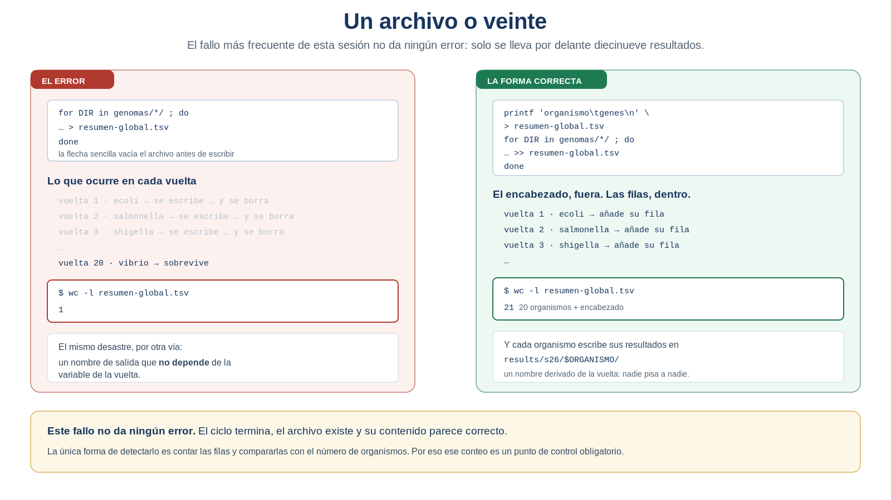

S26 — Iterar: de un genoma a una colección
Antes de clase harás un primer intento sin ejecutar nada: organizar la colección de genomas y escribir en español el recorrido que quieres que ocurra. Durante el taller construirás el script que lo recorre, provocarás a propósito el error que borra diecinueve resultados, y comprobarás cuáles ejecuciones fallaron. Después construirás el resumen del conjunto y responderás con él una pregunta que ninguna ejecución individual podía responder.
El primer intento es formativo: importa que describas el recorrido, no que sepas escribirlo.
Ficha del módulo
| Elemento | Descripción |
|---|---|
| Sesión | S26, 2 horas |
| Unidad | U5. Automatización de análisis bioinformáticos con Shell |
| Competencia principal | E. Automatización y scripting |
| Competencias integradas | A. Documentación reproducible; C. Manejo de datos biológicos; D. Análisis de datos genómicos |
| Propósito | Aplicar exactamente el mismo análisis a una colección completa de organismos, organizar sus resultados y construir un resumen que responda una pregunta sobre el conjunto |
| Consulta previa del Plan | El script parametrizado de S25; este módulo es la lectura autocontenida de la sesión |
| Continuidad | S25 dejó una herramienta que sirve para cualquier genoma, pero de uno en uno; S26 elimina la repetición manual |
| Lectura indispensable | Secciones 1–6 de este módulo (~50 min) |
| Lectura base de la unidad | Buffalo (2015), Cap. 12 — se entrega la evidencia en esta sesión |
| Lectura de consulta | Sección 7; las secciones S24 y S25 de tu propio doc/protocolo.md |
| Primer intento | Prácticas 1 y 2: organizar la colección y describir el recorrido, 40 min, sin ejecutar nada |
| Evidencia | Procesamiento por lotes de la colección, con resultados separados por organismo, bitácora de ejecuciones y resumen-global.tsv interpretado |
| Tarea numerada | Reporte de lectura del Cap. 12 (Buffalo). La evidencia integradora de la unidad se entrega en S28 |
Aprendes a ejecutar el mismo experimento sobre una colección completa de organismos y a poder afirmar que todos se analizaron igual. El for es la pieza que lo hace posible, y ocupará quince minutos de la sesión. Lo demás —organizar la colección, saber cuáles fallaron, construir el resumen e interpretarlo— es el trabajo científico, y es lo que se evalúa.
Relación con lo que ya sabes
S25 S26
Sirve para cualquier genoma → Sirve para una colección entera
"le digo cuál, y funciona" "le digo cuáles, y funcionan todos"S25 terminó con un diagnóstico preciso: el problema ya no era el procedimiento, eras tú. La herramienta estaba resuelta —recibe sus datos, comprueba lo que le dan, se detiene si algo falta— y lo único que quedaba era la repetición manual. Hoy se elimina.
| Habilidad que ya tienes | Dónde la aprendiste | Qué cambia en S26 |
|---|---|---|
| Una herramienta que recibe parámetros | S25 | Hoy no la escribes tú al invocarla: los produce el recorrido |
El código de salida exit 1 / $? |
S25 | Deja de ser un aviso en pantalla y pasa a ser un dato que se registra |
| Nombres de salida derivados del dato | S25 | Ahora el dato que los distingue es la carpeta del organismo, no el nombre del archivo |
mkdir -p |
S25 | Se ejecuta una vez por organismo, automáticamente |
> frente a >> |
U4, S10 | Aquí la diferencia decide si conservas veinte resultados o uno |
grep, sort, uniq -c, awk |
Toda la U4 | Vuelven al final, para resumir la colección |
| La ficha de procedencia de un archivo | U3 | Ahora hay que hacerla de una colección, no de un archivo |
Lo nuevo de hoy no es una construcción del lenguaje: es que el objeto de tu análisis deja de ser un genoma y pasa a ser un conjunto de organismos.
Dónde estás en la Unidad 5
S24 GUARDAR el procedimiento ✔ resuelto
S25 SEPARARLO de sus datos ✔ resuelto
▶ S26 REPETIRLO sin repetirte ← estás aquí
S27 ENTREGARLO a otra persona
S28 INTEGRARLO todo
S29 ESCALARLO fuera de tu sesión| Pregunta de la unidad | En S26 |
|---|---|
| ¿Cómo aplico el mismo análisis a otro genoma? | ✔ Resuelta en S25 |
| ¿Cómo lo aplico a una colección entera? | ✔ Se resuelve hoy |
| ¿Cómo garantizo que todos se analizaron igual? | ✔ Se resuelve hoy |
| ¿Cómo sé cuáles ejecuciones fallaron, si no estuve mirando? | ✔ Se resuelve hoy |
| ¿Qué puedo afirmar del conjunto que no podía afirmar de ninguno? | ✔ Se resuelve hoy |
| ¿Cómo la usa alguien que no soy yo? | ☐ S27 |
Dónde estás en la investigación
S18 Seleccionar → qué evidencia cuenta
S19 Identificar → de qué objeto habla
S20 Normalizar → bajo qué representación se compara
S21 Confrontar → qué queda en pie ante una fuente ajena
S22 Cuantificar → cuánto importa lo que encontré
S23 Integrar → puede rehacerse entero
S24 Guardar → se rehace solo
S25 Separar → sirve para cualquier genoma
S26 Escalar → sirve para una colección, y aparece una pregunta nueva ← hoyResultados de aprendizaje
Al finalizar la sesión podrás:
- Organizar una colección de genomas con una estructura regular y documentar su procedencia.
- Describir un recorrido en español antes de escribirlo, distinguiendo lo que se repite de lo que cambia en cada vuelta.
- Recorrer un conjunto de directorios con un ciclo y una variable de iteración.
- Derivar de la variable de la vuelta el nombre de cada salida, de modo que ninguna ejecución pise a otra.
- Distinguir
>de>>dentro de un ciclo y explicar por qué el error no produce ningún aviso. - Registrar el resultado de cada ejecución a partir de su código de salida, y contar cuántas fallaron.
- Explicar por qué un fallo individual no debe detener el recorrido, y qué debe hacerse en su lugar.
- Construir un resumen del conjunto con una fila por organismo.
- Verificar que todos los organismos se procesaron con el mismo procedimiento, y demostrarlo.
- Interpretar biológicamente el resumen: qué se observa en el conjunto, qué organismo se sale de la norma y qué parte de la variación es de anotación y no de biología.
Lista de verificación previa
Antes del taller comprueba que tienes:
Puede ser el conjunto del mini proyecto, un grupo de organismos emparentados que elijas, o el conjunto de respaldo del servidor. Lo importante no es cuáles sean, sino que tengan sentido juntos: comparar el inventario de doce bacterias emparentadas dice algo; comparar una bacteria con una levadura y un virus, casi nada.
Ruta de S26
| Momento | Qué hacer | Tiempo estimado |
|---|---|---|
| Antes de clase | Leer las secciones 1–6. Organizar la colección y describir el recorrido (Prácticas 1 y 2) | 50 + 40 min |
| Taller (1.ª hora) | Construir el recorrido y provocar los dos fallos silenciosos (Prácticas 3 y 4) | 60 min |
| Taller (2.ª hora) | Registrar las ejecuciones y construir el resumen del conjunto (Prácticas 5 y 6) | 60 min |
| Después del taller | Interpretar el resumen, verificar la uniformidad y documentar (Práctica 7) | 100 min |
Las secciones 1–6 son indispensables; la sección 7 es de consulta y sostiene el puente a S27.
Igual que en S24 y S25: Concepto esencial, Concepto de apoyo y Consulta.
En el taller se construye el recorrido, se comprueba que procesa todo y se registra qué pasó con cada organismo. La interpretación biológica del resumen se termina después. El núcleo que no debe recortarse es:
organizar la colección → recorrerla → saber cuáles fallaron → resumir1. Veinte órdenes escritas a mano [Indispensable]
Concepto esencial
Al terminar S25 tenías una herramienta que funciona con cualquier genoma. Ahora imagina lo que va a pasarte de verdad —en el mini proyecto, en una tesis, en cualquier laboratorio—: llega una colección. Veinte bacterias. O cincuenta cepas. O cien ensamblados.
La herramienta funciona perfectamente. Y aun así tienes que escribir esto:
./src/analizar-genoma.sh genomas/ecoli/genome.fna genomas/ecoli/annotation.gff3
./src/analizar-genoma.sh genomas/salmonella/genome.fna genomas/salmonella/annotation.gff3
./src/analizar-genoma.sh genomas/shigella/genome.fna genomas/shigella/annotation.gff3
./src/analizar-genoma.sh genomas/vibrio/genome.fna genomas/vibrio/annotation.gff3
...Una vez por organismo.

Figura 26.1. Dónde está ahora el cuello de botella. La herramienta ya sirve para cualquier genoma; el problema se mudó de sitio. Elaboración propia.
1.1 El problema no es el tedio
Es fácil describir esto como una molestia, y ese sería el encuadre equivocado. Escribir veinte órdenes no es difícil ni especialmente largo. El problema es lo que no puedes afirmar después:
| Lo que ocurre | Por qué importa científicamente |
|---|---|
| Te saltas un organismo | Tu conjunto de resultados no corresponde a tu conjunto de datos, y no lo sabes |
| Escribes mal una ruta | Ese organismo falla; el aviso se pierde entre cientos de líneas |
| Cambias un detalle a la mitad | Los organismos dejan de ser comparables entre sí |
| Alguien te pide repetirlo | No hay ningún sitio donde esté escrito qué analizaste |
Ese último punto es el decisivo. En S25 aprendiste que dos genomas solo son comparables si se analizaron con el mismo instrumento. Aquí aparece la versión ampliada de la misma exigencia:
Un conjunto de resultados solo es un experimento si puedes decir, y demostrar, exactamente qué se analizó y con qué.
Veinte órdenes escritas a mano no dejan constancia de nada. El recorrido —qué organismos, en qué orden, con qué herramienta— vive en tu memoria y en el historial de la terminal, que no es un documento científico.
1.2 La pregunta de hoy
¿Cómo aplico exactamente el mismo análisis a una colección completa, y cómo demuestro que todos los organismos recibieron el mismo tratamiento?
Y hay una segunda, que solo aparece cuando la primera está resuelta y es la más interesante de la sesión: ¿qué puedo preguntarle al conjunto que no podía preguntarle a ningún organismo por separado?
IDEA CLAVE. Automatizar por lotes no consiste en escribir menos. Consiste en poder afirmar que los veinte organismos se analizaron exactamente igual, y en dejar constancia de ello.
2. La colección como objeto de análisis [Indispensable]
Concepto esencial
Hasta S25 la entrada de tu análisis era un par de archivos:
FASTA + GFF3Desde hoy la entrada es otra cosa:
una colección de organismosY como toda entrada de datos del curso, necesita dos cosas: una organización regular y una ficha de procedencia.
2.1 Una forma, repetida
Para que un recorrido pueda visitar veinte carpetas y saber qué hay dentro de cada una, todas deben tener la misma forma. Esa regularidad no es una manía de orden: es el contrato que hace posible la automatización.
data/source/genomas/
├── ecoli/
│ ├── genome.fna
│ └── annotation.gff3
├── salmonella/
│ ├── genome.fna
│ └── annotation.gff3
├── shigella/
│ ├── genome.fna
│ └── annotation.gff3
└── vibrio/
├── genome.fna
└── annotation.gff3Tres decisiones, y las tres importan:
| Decisión | Por qué |
|---|---|
| Una carpeta por organismo | El nombre de la carpeta identifica al organismo: será el nombre de sus resultados |
| El mismo nombre de archivo dentro de cada una | El recorrido no puede adivinar nombres distintos; con esta convención los construye |
Todo dentro de data/source/ |
Son datos originales y no se tocan, como desde U1 (Noble, 2009) |
Conviene ponerle nombre a lo que acabas de establecer:
La estructura del directorio forma parte del contrato entre los datos y la herramienta. Si ese contrato cambia, el recorrido deja de ser válido.
Es un contrato en los dos sentidos: la colección se compromete a tener siempre esa forma, y el recorrido se compromete a no suponer nada más. Por eso una carpeta con la anotación llamada de otra manera no es un descuido menor: es una ruptura del contrato, y el recorrido no tiene forma de saberlo por su cuenta. Lo notará la bitácora, no el ciclo.
Si todos los organismos tienen un archivo llamado genome.fna, entonces el nombre del archivo ya no distingue a nadie. En S25 derivabas el nombre de la salida del nombre del FASTA; aquí eso haría que los veinte organismos escribieran en el mismo sitio. Lo que distingue ahora es la carpeta. Es un cambio pequeño en el código y grande en el razonamiento.
2.2 La ficha de la colección
Desde U3 documentas la procedencia de cada archivo. Una colección necesita lo mismo, un nivel más arriba:
| Elemento de la ficha | Ejemplo |
|---|---|
| Criterio de selección | Por qué estos organismos y no otros |
| Número de organismos | 12 |
| Fuente y versión | Recurso, fecha de descarga, versión del ensamblado de cada uno |
| Estructura adoptada | Una carpeta por organismo; genome.fna y annotation.gff3 |
| Qué se excluyó y por qué | Organismos descartados, con su motivo |
Un conjunto de doce bacterias emparentadas permite preguntar si el número de genes acompaña al tamaño del genoma. Un conjunto reunido «porque estaban a mano» no permite preguntar nada: cualquier patrón que aparezca podría ser del muestreo. Declara tu criterio antes de mirar los resultados.
Práctica 1 — Organizar la colección (antes de clase, primer intento)
Pregunta metodológica. ¿Qué conjunto de organismos voy a analizar, por qué esos, y cómo tienen que estar organizados para que un recorrido pueda visitarlos?
Objetivo. Convertir un montón de descargas en una colección con criterio y con ficha.
Antes de clase. En doc/s26-primer-intento.md, y en data/source/:
- Declara el criterio de selección antes de tocar nada: por qué estos organismos y no otros, y qué pregunta biológica esperas poder plantearle al conjunto. Dos o tres líneas.
- Organiza la colección con la estructura de la Sección 2.1: una carpeta por organismo, con
genome.fnayannotation.gff3dentro. Renombra los archivos si hace falta —copiando, nunca moviendo el original de su descarga—. - Escribe la ficha de procedencia de la colección con los cinco elementos de la Sección 2.2.
- Comprueba la regularidad. Sin ejecutar nada complicado: recorre las carpetas mirando que todas tengan los dos archivos con el mismo nombre. Anota las que no.
- Anota el número de organismos. Ese número es la línea base de todos los controles de hoy.
- Responde por escrito: si un organismo tuviera su anotación con otro nombre, ¿qué pasaría al recorrer la colección? ¿Fallaría todo, o solo él?
Producto esperado. La colección organizada en data/source/genomas/, su ficha de procedencia y el número de organismos.
Criterio de logro: todas las carpetas tienen la misma forma, el criterio de selección está declarado y la ficha permitiría a otra persona reconstruir la colección.
3. Describir un recorrido [Indispensable]
Concepto esencial
Antes de escribir nada, formula el recorrido en español. Es el mismo hábito de S23: primero el razonamiento, después el comando.
Para cada carpeta de organismo que hay dentro de la colección:
llamar a la herramienta con el genoma y la anotación de esa carpeta,
dejar sus resultados en una carpeta con el nombre de ese organismo,
y anotar si salió bien o mal.
Cuando ya no queden carpetas:
reunir los resultados de todos en una sola tabla.Fíjate en la estructura de esa descripción, porque es exactamente la del código:
- hay algo que cambia en cada vuelta: el organismo;
- hay algo que es igual en todas: lo que se hace con él;
- y hay algo que solo ocurre al final: el resumen.
3.1 El ciclo
Sintaxis mínima
for DIR in data/source/genomas/*/ ; do
ORGANISMO="$(basename "$DIR")"
echo "== $ORGANISMO"
done¿Qué hace? Ejecuta las órdenes entre do y done una vez por cada elemento que coincida con el patrón, guardando el elemento actual en la variable.
¿Por qué aparece en esta sesión? Porque es la única forma de que el recorrido —qué organismos y en qué orden— quede escrito en el proyecto en vez de vivir en tu memoria.
Tres detalles que conviene mirar de cerca:
| Detalle | Qué significa |
|---|---|
*/ |
El patrón termina en barra: selecciona solo directorios, no los archivos sueltos que pueda haber |
"$DIR" |
El valor de la vuelta, entre comillas, por la misma razón de S25 |
basename |
Recorta la ruta y deja el nombre del organismo: la etiqueta de esta vuelta |
Antes de empezar a dar vueltas, el shell sustituye data/source/genomas/*/ por la lista de carpetas que existen en ese momento. Es la misma expansión que usabas en U2 con ls *.gff3, ahora puesta al servicio de un recorrido.
Con una vuelta, y con el patrón literal como valor. Es decir: si te equivocas en la ruta de la colección, verás == * y una sola ejecución fallida, no un error claro. Por eso la comprobación de que el directorio existe —la de S25— sigue siendo obligatoria, y por eso hay que contar las vueltas.
3.2 Construir las rutas de cada vuelta
Concepto esencial
La variable de la vuelta guarda la carpeta, terminada en barra. De ahí salen las dos rutas que la herramienta necesita:
FASTA="${DIR}genome.fna"
GFF="${DIR}annotation.gff3"Las llaves de ${DIR} marcan dónde acaba el nombre de la variable, para que el shell no crea que se llama DIRgenome. Es la forma que aprendiste en S25 y aquí se vuelve necesaria.
IDEA CLAVE. Ninguna ruta se escribe a mano. Todas se construyen a partir de la variable de la vuelta. Ese es el mecanismo por el que veinte organismos reciben un tratamiento idéntico: nadie teclea nada veinte veces.
Práctica 2 — Describir el recorrido (antes de clase, primer intento)
Pregunta metodológica. ¿Qué debe ocurrir exactamente, y en qué orden, para analizar una colección entera?
Objetivo. Escribir el recorrido en español antes de escribirlo en shell.
Antes de clase. En el mismo documento, sin código:
Escribe el recorrido en español, con la estructura de la Sección 3: qué ocurre en cada vuelta y qué ocurre solo al final.
Separa las tres clases de cosas en una tabla:
Cambia en cada vuelta Es igual en todas Solo ocurre al final … … … Predice qué ocurriría en cada uno de estos casos:
# Situación Mi predicción 1 A un organismo le falta el GFF3 … 2 La ruta de la colección está mal escrita … 3 El resumen global se escribe con >dentro del ciclo… 4 Todos los organismos escriben en results/s26/inventario.tsv… 5 Hay una carpeta que no es un organismo (por ejemplo, notas/)… Marca cuál de los cinco es el más peligroso y explica por qué. Pista: los tres primeros dan señales; dos de ellos no.
Diseña la bitácora: qué columnas necesitas para poder responder, un mes después, qué organismos se procesaron y cuáles no.
Escribe los controles que aplicarás al terminar, con su igualdad esperada (Sección 5.2).
Producto esperado. El recorrido en español, la tabla de tres columnas, las cinco predicciones y el diseño de la bitácora.
Criterio de logro: tu descripción distingue lo que se repite de lo que cambia, y tienes escritos los controles antes de haber ejecutado nada.
4. Lo que hace el recorrido en cada vuelta [Indispensable]
Concepto esencial

Figura 26.2. El recorrido de una colección completa. La herramienta es la misma en cada vuelta; lo nuevo es el recorrido, y lo que aparece al final. Elaboración propia.
4.1 Un script que llama a otro script
Concepto esencial
Esto es lo que hoy no habías hecho nunca: un script que usa otro. Y no hay nada especial que aprender —se invoca igual que desde la terminal—, pero sí algo importante que entender:
procesar-lote.sh → decide QUÉ organismos se analizan y en qué orden
analizar-genoma.sh → sabe CÓMO se analiza un organismoCada uno tiene un trabajo y ninguno de los dos sabe hacer el del otro. Por eso la herramienta de S25 no se toca: si mañana mejoras el análisis, lo haces en un solo sitio y los veinte organismos lo heredan.
Hay una sola cosa que la herramienta de S25 no sabe: dónde escribir. Antes lo decidía ella (results/s25/…); ahora quien la invoca necesita decidirlo, porque los resultados de cada organismo van a su propia carpeta. Se resuelve añadiéndole un tercer parámetro, el directorio de salida. Es la misma lección de S25 —quien usa la herramienta decide los datos— aplicada también al destino.
4.2 Saber cuál falló
Concepto esencial
Aquí se cobra lo que hiciste en S25. Tu herramienta comprueba sus entradas y termina con exit 1 cuando algo falta. Ese número, que entonces parecía burocrático, es hoy la única forma de saber qué pasó en veinte ejecuciones que nadie miró.
./src/analizar-genoma.sh "$FASTA" "$GFF" "results/s26/$ORGANISMO"
CODIGO=$?$? guarda el resultado del comando inmediatamente anterior
Si escribes un echo entre medias, $? ya no habla de tu herramienta: habla del echo, que siempre sale bien. Guárdalo en una variable en la línea siguiente, siempre.
Con el código en la mano, la decisión es del if de S25, ahora con sus dos caminos:
if [ "$CODIGO" -eq 0 ]; then
printf '%s\tok\t%s\n' "$ORGANISMO" "$CODIGO" >> "$BITACORA"
else
echo " FALLÓ ($CODIGO). Continúo con el siguiente." >&2
printf '%s\tfallo\t%s\n' "$ORGANISMO" "$CODIGO" >> "$BITACORA"
fielse es la única construcción nueva del lenguaje que aparece hoy además del ciclo: el mismo if que ya conoces, con un camino alternativo.
4.3 Por qué un fallo no debe detener el recorrido
Concepto esencial
Parece contradictorio con S25, donde aprendiste que un script debe detenerse ante una entrada inválida. No lo es, y la distinción es importante:
| Nivel | Qué debe hacer ante un problema | Por qué |
|---|---|---|
| La herramienta (un organismo) | Detenerse. No producir nada. | Un resultado falso es peor que ninguno |
| El lote (la colección) | Continuar, y dejarlo anotado | Que a un organismo le falte la anotación no invalida a los otros diecinueve |
Detener el lote entero porque un archivo llegó corrupto significaría perder las diecinueve ejecuciones correctas. Lo científicamente honesto es lo contrario: procesar todo lo procesable y declarar con precisión qué quedó fuera y por qué.
De ahí sale un producto que hasta hoy no existía en tu proyecto: la bitácora del lote, una fila por organismo con su estado.
organismo estado codigo fecha
ecoli ok 0 2026-11-04
salmonella ok 0 2026-11-04
shigella ok 0 2026-11-04
vibrio fallo 1 2026-11-04Y contar los fallos no necesita ninguna herramienta nueva. Es la Unidad 4:
awk -F'\t' '$2=="ok"' results/s26/ejecuciones.tsv | wc -l
awk -F'\t' '$2=="fallo"' results/s26/ejecuciones.tsv | wc -lIDEA CLAVE. Un lote sin bitácora no es un experimento: es un montón de carpetas. La bitácora es lo que convierte «ejecuté el análisis sobre la colección» en una afirmación verificable.
Práctica 3 — Construir el recorrido (durante el taller)
Pregunta biológica de fondo. ¿Qué contiene la anotación de cada uno de los organismos de mi colección?
Objetivo. Escribir el script que recorre la colección y llama a la herramienta.
Cada una termina en algo que funciona; no pases a la siguiente sin haber comprobado la anterior.
Parte A · preparar la herramienta → que siga funcionando sola, con un organismo
↓
Parte B · escribir el recorrido → primero recorrer, después analizar
↓
Parte C · ejecutar y contrastar → ¿procesó todo? ¿da lo mismo que S25?Parte A — Preparar la herramienta
- Añade el tercer parámetro a
src/analizar-genoma.sh: el directorio de salida. Actualiza la comprobación de$#, el bloque de uso y el encabezado. - Corrige de dónde sale el nombre del derivado. En S25 salía del nombre del FASTA; con la colección, todos se llaman igual. Debe salir ahora del organismo.
- Comprueba que la herramienta sigue funcionando sola, con un organismo, antes de meterla en ningún ciclo.
Parte B — Escribir el recorrido
Crea
src/procesar-lote.shcon su encabezado, su bloque de uso y las comprobaciones de S25: un argumento, que sea un directorio y que exista.Escribe primero un ciclo que no analiza nada, solo imprime el nombre de cada organismo:
for DIR in "$COLECCION"/*/ ; do ORGANISMO="$(basename "$DIR")" echo "== $ORGANISMO" doneEjecútalo y cuenta las líneas: tienen que ser tantas como organismos. Este paso parece trivial y es el más importante de la práctica: separa «recorro bien» de «analizo bien».
Añade la construcción de las rutas y comprueba, imprimiéndolas, que apuntan a archivos que existen. Todavía sin llamar a la herramienta.
Añade la llamada a la herramienta, con su directorio de salida derivado del organismo.
Parte C — Ejecutar y contrastar
- Ejecuta el lote completo y comprueba que hay una carpeta de resultados por organismo, con el nombre correcto.
- Compara con S25. Toma el organismo que ya habías analizado en S25 y verifica que su inventario coincide, byte a byte, con el que produjiste entonces. Si difiere, el lote está haciendo algo distinto y hay que averiguar qué antes de seguir.
Producto esperado. src/procesar-lote.sh funcionando, una carpeta de resultados por organismo y la comparación con S25.
Criterio de logro: el número de carpetas de resultados coincide con el de organismos, y el resultado de un organismo conocido es idéntico al de S25.
5. El error que borra diecinueve resultados [Indispensable]
Concepto esencial
Este es el fallo más frecuente de la sesión, y merece una sección propia porque no produce ningún error.

Figura 26.3. Un archivo o veinte. El ciclo termina, el archivo existe y su contenido parece correcto. Elaboración propia.
5.1 Dos formas de perder diecinueve resultados
Forma 1 — la flecha sencilla dentro del ciclo. > vacía el archivo antes de escribir. Dentro de un ciclo eso significa que cada vuelta borra a la anterior:
for DIR in genomas/*/ ; do
... > results/s26/resumen-global.tsv # ✗ solo sobrevive el último
doneLa forma correcta separa las dos cosas: el encabezado, una vez y fuera; las filas, añadidas dentro.
printf 'organismo\ttipos\tgenes\tcds\n' > results/s26/resumen-global.tsv # ✓ una vez
for DIR in genomas/*/ ; do
... >> results/s26/resumen-global.tsv # ✓ añade
doneForma 2 — un nombre de salida que no depende de la vuelta. Si las veinte iteraciones escriben en results/s26/inventario.tsv, da igual que uses >>: los resultados se mezclan sin poder atribuirse a nadie. El nombre tiene que llevar dentro la variable:
results/s26/"$ORGANISMO"/inventario-features.tsv5.2 El control obligatorio de esta sesión
Como el fallo no avisa, hay que buscarlo. Y la comprobación es de las que aprendiste en S23: una cardinalidad que tiene que cuadrar.
| Cantidad | Cómo se obtiene | Relación esperada |
|---|---|---|
| Organismos en la colección | ls -d data/source/genomas/*/ \| wc -l |
Línea base |
| Filas de la bitácora | wc -l < results/s26/ejecuciones.tsv |
organismos + 1 (encabezado) |
| Ejecuciones correctas | awk -F'\t' '$2=="ok"' … \| wc -l |
— |
| Ejecuciones fallidas | awk -F'\t' '$2=="fallo"' … \| wc -l |
correctas + fallidas = organismos |
| Filas del resumen global | wc -l < results/s26/resumen-global.tsv |
correctas + 1 (encabezado) |
| Carpetas de resultados | ls -d results/s26/*/ \| wc -l |
igual a las correctas |
Si alguna de esas igualdades no se cumple, detente: es un control bloqueante, en el sentido exacto de S23. Los dos desajustes más habituales son el > dentro del ciclo y un organismo que falló sin que te dieras cuenta.
IDEA CLAVE. En un análisis por lotes, la primera pregunta nunca es «¿salió bien?», sino «¿salieron todos?». Y esa pregunta se responde contando, no mirando.
Práctica 4 — Provocar los fallos que no avisan (durante el taller)
Pregunta metodológica. ¿Cómo detecto un error que no produce ningún mensaje?
Objetivo. Ver con tus propios ojos los dos fallos silenciosos del procesamiento por lotes.
Trabaja sobre una copia: cp src/procesar-lote.sh /tmp/prueba-lote.sh.
Pasos.
Provoca el
>dentro del ciclo. En la copia, escribe una línea que redirija con>dentro del ciclo a un archivo de resumen. Ejecuta y responde:- ¿Dio algún error?
- ¿Cuántas líneas tiene el archivo?
- ¿De qué organismo son?
- Si no hubieras contado, ¿lo habrías notado?
Provoca el nombre no derivado. Haz que todos los organismos escriban su inventario en
results/tmp/inventario.tsv. Ejecuta y comprueba qué queda al final.Provoca el patrón sin coincidencias. Invoca el lote con una ruta de colección que no existe — o, si tu script la comprueba (debería), quítale la comprobación en la copia—. Anota cuántas vueltas dio el ciclo y con qué valor.
Provoca una carpeta que no es un organismo. Crea
data/source/genomas/notas/con un archivo de texto dentro y ejecuta el lote. ¿Qué pasó? ¿Se detuvo todo? ¿Quedó constancia?Rellena la tabla con lo que realmente ocurrió y contrástala con tus predicciones de la Práctica 2:
# Situación ¿Dio error? Qué quedó al final ¿Coincide con mi predicción? Responde por escrito: de los cuatro, ¿cuáles se detectan mirando la pantalla y cuáles solo contando? Esa distinción es el contenido de la sesión.
Ver retroalimentación
Ábrelo después de haber ejecutado los cuatro. Son comportamientos del shell, idénticos para cualquier colección.
| # | ¿Da error? | Qué queda al final | Por qué |
|---|---|---|---|
| 1 | No | El resumen contiene solo el último organismo | > trunca el archivo en cada vuelta. Los diecinueve anteriores se escribieron y se borraron |
| 2 | No | Un único inventario.tsv, el del último organismo |
Mismo mecanismo: el nombre no deriva de la entrada, así que cada vuelta pisa a la anterior |
| 3 | Depende | Una vuelta, con el patrón literal como valor | Si el patrón no encuentra nada, Bash no devuelve una lista vacía: entrega el patrón sin expandir, tal cual, como si fuera un nombre |
| 4 | Sí, por comando | Un directorio de resultados con salidas vacías o a medias | El ciclo no distingue una carpeta de organismo de cualquier otra; procesa lo que le den y continúa tras cada fallo |
Paso 6 — la respuesta que importa. Los casos 3 y 4 gritan: verás mensajes en pantalla, aunque haya que leerlos. Los casos 1 y 2 son mudos: terminan con código 0, sin una sola línea de error, y solo se detectan contando. Si esperabas diecinueve resultados y hay uno, el error está en el número, no en la pantalla.
Ese es el fallo característico del procesamiento por lotes, y la razón de que la bitácora de la Práctica 5 no sea burocracia: cuando el error no avisa, el recuento es la única alarma.
Sobre el caso 3. Es el más contraintuitivo. Mucha gente predice «el ciclo no dará ninguna vuelta»; da exactamente una, con un valor que no existe. Por eso la comprobación de que la colección existe va antes del ciclo, no dentro.
Producto esperado. La tabla de los cuatro fallos provocados con su resultado real.
Criterio de logro: sabes decir, para cada fallo, qué control lo habría detectado.
Práctica 5 — La bitácora del lote (durante el taller)
Pregunta metodológica. ¿Qué organismos se procesaron realmente, y cuáles no?
Objetivo. Registrar el resultado de cada ejecución y poder contarlo.
Parte A — Registrar
- Captura el código de salida de la herramienta en una variable, en la línea inmediatamente siguiente a la llamada. Comprueba que no hay ningún
echoen medio. - Añade el
if/elseque escribe una fila en la bitácora según el código, con las columnas que diseñaste en la Práctica 2. - Haz que el fallo sea visible sin ser fatal: mensaje por
>&2, fila en la bitácora, y el recorrido continúa.
Parte B — Provocar un fallo real
- Rompe un organismo a propósito: renombra temporalmente su anotación, o déjala vacía. Es la situación que vas a encontrarte de verdad con una descarga incompleta.
- Ejecuta el lote y comprueba las tres cosas: que ese organismo aparece como
fallo, que los demás se procesaron, y que no quedó una carpeta de resultados vacía con su nombre. - Cuenta correctos y fallidos con
awkywc -l, y comprueba que la suma da el total de organismos. - Restaura el organismo y vuelve a ejecutar.
Parte C — Los controles
- Aplica los seis controles de la Sección 5.2 y registra el resultado de cada igualdad.
- Responde: si la suma de correctos y fallidos no diera el total de organismos, ¿qué podría estar pasando?
Producto esperado. results/s26/ejecuciones.tsv con una fila por organismo, y la tabla de los seis controles.
Criterio de logro: un organismo roto queda registrado como fallo sin detener el lote ni dejar resultados a medias, y todos los controles cuadran.
6. La pregunta que solo existe cuando existe el conjunto [Indispensable]
Concepto esencial
Aquí llega lo que justifica toda la sesión, y no es informático.
Cuando el recorrido termina, tienes veinte carpetas de resultados. Cada una responde las preguntas de la Unidad 4 sobre su organismo: cuántos genes, cuántas CDS, qué tipos de feature. Nada nuevo.
Pero al reunir una fila por organismo aparece una tabla que ninguna de las veinte ejecuciones contenía:
organismo tipos genes cds
ecoli 18 4401 4298
salmonella 17 4632 4501
shigella 19 4210 3789
...Y con ella, preguntas biológicas que hasta hoy no podías ni formular:
- ¿Cómo se reparte el número de genes entre organismos emparentados?
- ¿Hay alguno que se salga claramente de la norma?
- ¿La proporción CDS/gen es parecida en todos, o alguno destaca?
- ¿Los tipos de feature anotados son los mismos en toda la colección?
IDEA CLAVE. Cuántos genes tiene tu genoma lo sabías desde S13. Cómo se reparten entre veinte organismos, cuál es atípico y por qué no está dentro de ningún análisis individual: solo aparece cuando existe el conjunto. Eso es lo que has ganado hoy, y no es una comodidad: es una pregunta nueva.
6.1 Cómo se lee un resumen así
Concepto de apoyo
Con el resumen delante, el análisis es el de siempre —el de S13 y S22, ahora aplicado a organismos en vez de a registros—: ordenar, mirar la distribución, buscar lo que se sale.
sort -k3,3nr results/s26/resumen-global.tsv | headY la interpretación exige la misma cautela de S21 y S25. Antes de atribuir una diferencia a la biología, hay que descartar que venga de la anotación:
| Lo que observas | Posible causa biológica | Posible causa técnica |
|---|---|---|
| Un organismo con muchos menos genes | Genoma reducido; especies de vida intracelular tienden a perder genes | Ensamblado incompleto o anotación parcial |
| Proporción CDS/gen baja | Más genes no codificantes de proteína, o muchos pseudogenes | Criterio distinto para anotar pseudogenes |
| Tipos de feature que solo aparecen en uno | El organismo tiene esos elementos | Anotado con otra versión del vocabulario |
| Un organismo con muchos más genes | Genoma mayor, plásmidos | El ensamblado incluye contigs no depurados |
Con veinte filas es tentador buscar tendencias y declararlas. Recuerda de dónde salen esos números: son conteos de anotación, no medidas experimentales, y la anotación de veinte organismos rara vez proviene del mismo criterio. Una observación honesta se escribe como «en esta colección, y con esta anotación, se observa…», y declara lo que no puede distinguir.
Práctica 6 — El resumen del conjunto (durante el taller)
Pregunta biológica. ¿Cómo se reparte el contenido de la anotación entre los organismos de mi colección?
Objetivo. Construir la tabla que ninguna ejecución individual contenía.
Pasos.
Escribe el encabezado del resumen fuera del ciclo, con
>. Decide sus columnas: organismo y, al menos, tipos distintos de feature, genes y CDS.Extrae los valores de cada organismo de su propio inventario, con las herramientas de U4:
GENES="$(awk '$2=="gene" { print $1 }' "$SALIDA/inventario-features.tsv")"Añade una fila por organismo dentro del ciclo, con
>>, solo si su ejecución fue correcta. Un organismo que falló no tiene números que aportar, y ponerlo con casillas vacías falsearía el conjunto: para eso está la bitácora.Comprueba la cardinalidad: filas del resumen = ejecuciones correctas + 1.
Ordena el resumen por número de genes y míralo entero.
Verifica una fila a mano. Toma un organismo, abre su inventario y comprueba que los números del resumen son los suyos. Un resumen que nadie ha comprobado contra su origen no es evidencia.
Anota tres observaciones sobre el conjunto, formuladas como preguntas, no como conclusiones.
Producto esperado. results/s26/resumen-global.tsv verificado, con sus controles y tres observaciones.
Criterio de logro: el resumen tiene una fila por ejecución correcta, los valores de una fila están verificados contra su origen y tus observaciones están escritas como preguntas abiertas.
Práctica 7 — Leer la colección (después del taller)
Pregunta biológica. ¿Qué puedo afirmar sobre este conjunto de organismos, y qué parte de lo que observo viene de la biología y qué parte de la anotación?
Objetivo. Cerrar la sesión con una interpretación honesta y con la prueba de que todos los organismos recibieron el mismo tratamiento.
Parte A — Demostrar la uniformidad
Reúne las tres pruebas de que la colección se analizó con un procedimiento único:
Prueba Cómo se obtiene La herramienta fue la misma en todas las vueltas Checksum de analizar-genoma.sh; una sola copia ensrc/Todos los organismos se recorrieron Filas de la bitácora = organismos de la colección Ninguna ruta se escribió a mano El script no contiene ningún nombre de organismo Escribe la afirmación que esas tres pruebas te permiten sostener, y solo esa.
Parte B — Interpretar
- Describe la distribución: rango, valor típico, y si hay organismos que se separan del resto. Usa las medidas de S22; no hacen falta otras.
- Clasifica cada observación llamativa con la tabla de la Sección 6.1: ¿biológica, técnica, o no distinguible con estos datos?
- Elige un organismo atípico y averigua qué más necesitarías saber para explicar por qué lo es. Basta con nombrar la evidencia que falta; no hay que conseguirla.
- Escribe la interpretación en dos o tres párrafos, con la fórmula honesta: «en esta colección, y con esta anotación, se observa…».
Parte C — Documentar
- Actualiza
doc/protocolo.mdcon la sección de S26 (plantilla en la Sección 8). - Declara las limitaciones: qué organismos quedaron fuera y por qué, qué no puede afirmarse a partir de conteos de anotación, y qué le falta a tu flujo para que lo use otra persona.
Producto esperado. La interpretación del conjunto, las tres pruebas de uniformidad y la sección S26 del protocolo.
Criterio de logro: cada afirmación sobre el conjunto puede rastrearse hasta una fila del resumen, y hay al menos una observación declarada como no distinguible entre biología y anotación.
7. Automático todavía no es entregable [Consulta]
Al terminar tendrás algo que funciona bien: una orden analiza una colección entera, organiza los resultados y produce un resumen del conjunto.
Ahora hazte la pregunta de S27: ¿podría usarlo alguien que no seas tú?
Repasa honestamente:
¿sabe esa persona cómo se llama al script y qué espera recibir?
¿sabe cómo tiene que estar organizada la colección?
¿sabe dónde van a aparecer los resultados y qué significa cada columna?
¿sabe qué hacer si la bitácora dice que tres organismos fallaron?
¿sabría instalarlo en su propio proyecto?| Un flujo automatizado (hoy) | Una herramienta científica (S27) |
|---|---|
| Funciona en tu proyecto, con tus convenciones | Declara qué necesita y se instala en otro |
| Sabes lo que hace porque lo escribiste | Está documentado para quien no lo escribió |
| Los mensajes los entiendes tú | Los mensajes guían a quien no sabe qué pasó |
| Sabes qué columnas tiene el resumen | El resumen viene con su diccionario |
| Se ha probado con tu colección | Se ha probado también con lo que no está previsto |
IDEA CLAVE. Tu análisis ya es automático y reproducible para ti. Lo que falta no es potencia: es que otra persona pueda usarlo, entenderlo y confiar en él. Esa distancia —entre un script que funciona y una herramienta que se entrega— es el contenido de S27.
Y conviene ver el cambio de pregunta, porque no es un matiz:
hasta hoy → ¿puede analizar toda la colección?
en S27 → ¿puede otra persona utilizar esta herramienta sin que yo esté presente?Son preguntas de naturaleza distinta. La primera se responde ejecutando; la segunda, solo se responde cuando alguien más lo intenta.
7.1 Y una pregunta para más adelante [Consulta]
Hoy analizaste doce organismos. La orden tardó unos minutos y la ejecutaste en tu sesión de terminal, esperando a que terminara.
¿Qué cambiaría si fueran doce mil?
No respondas todavía. Solo anota la pregunta: el recorrido sería el mismo, pero tu terminal tendría que quedarse abierta durante horas o días, y una sola computadora tendría que hacerlo todo. Ahí es donde el análisis deja de caber en tu sesión —y ahí empieza S29.
No confundas «más rápido» con «más grande». Lo que cambia a esa escala no es solo el tiempo: es dónde se ejecuta el trabajo y quién se encarga de esperarlo. Esa es exactamente la razón de ser de un clúster de cómputo, y por eso la sesión de HPC va después de esta y no antes.
8. Documentar: la sección del protocolo [Indispensable]
Agrega a doc/protocolo.md, después de la sección de S25. No sustituye a ninguna anterior.
## S26 — Procesamiento por lotes
### 1. La colección analizada
| Elemento | Contenido |
| --- | --- |
| Criterio de selección | Por qué estos organismos |
| Número de organismos | … |
| Fuente y versiones | … |
| Estructura adoptada | Una carpeta por organismo; `genome.fna`, `annotation.gff3` |
| Excluidos y motivo | … |
### 2. Criterio de recorrido
Qué patrón selecciona los organismos, por qué recorre solo directorios y cómo se construyen las
rutas de cada vuelta.
### 3. Organización de los resultados
Dónde queda cada producto y qué nombre recibe; de qué se deriva ese nombre.
### 4. Bitácora de ejecuciones
| Organismo | Estado | Código | Fecha | Causa del fallo |
| --- | --- | --- | --- | --- |
| … | ok / fallo | … | … | … |
Procesados con éxito: … · Fallidos: … · Total: … (la suma debe dar el total de la colección)
### 5. Controles aplicados
| Control | Valor esperado | Valor obtenido | ¿Cuadra? |
| --- | --- | --- | --- |
| Filas de la bitácora = organismos + 1 | … | … | … |
| Correctos + fallidos = organismos | … | … | … |
| Filas del resumen = correctos + 1 | … | … | … |
| Carpetas de resultados = correctos | … | … | … |
### 6. Pruebas de uniformidad
Qué demuestra que todos los organismos se analizaron con el mismo procedimiento.
### 7. Resumen del conjunto
| Organismo | Tipos | Genes | CDS | … |
| --- | --- | --- | --- | --- |
| … | … | … | … | … |
### 8. Interpretación del conjunto
Qué se observa en la colección, qué organismo se sale de la norma, y qué parte de la variación no
puede atribuirse a la biología con estos datos.
### 9. Limitaciones
- Los números son conteos de **anotación**, no medidas experimentales.
- La anotación de los organismos puede provenir de criterios y versiones distintos.
- Los organismos fallidos quedan fuera del resumen (ver bitácora).
- El flujo depende de la estructura de carpetas adoptada aquí.
### 10. Nuevas preguntas que abre
Las que esta sesión deja planteadas y no puede resolver.Sin bitácora no puedes responder la pregunta más básica que te van a hacer: ¿cuántos organismos analizaste? «Todos los que había» no es una respuesta; una tabla con una fila por organismo, sí.
Evidencia de la sesión
Entrega o conserva, según indique el docente:
doc/s26-primer-intento.mdcon la ficha de la colección, el recorrido en español y las cinco predicciones (Prácticas 1 y 2);- la colección organizada en
data/source/genomas/, con su ficha de procedencia; src/procesar-lote.shysrc/analizar-genoma.shactualizados;- la tabla de los cuatro fallos provocados (Práctica 4);
results/s26/ejecuciones.tsvcon una fila por organismo;results/s26/resumen-global.tsvverificado, y las carpetas de resultados por organismo;- la tabla de los seis controles con su resultado;
- la interpretación del conjunto y las tres pruebas de uniformidad;
- el reporte de lectura del Cap. 12 de Buffalo;
doc/bitacora-ia.mdactualizada;- la sección S26 de
doc/protocolo.md, con todas las anteriores intactas.
Errores frecuentes y estrategias de diagnóstico
| Error | Por qué ocurre | Estrategia de diagnóstico |
|---|---|---|
| Al final solo hay un resultado | > dentro del ciclo: cada vuelta borró a la anterior |
Encabezado fuera con >, filas dentro con >>; contar las filas |
| Veinte vueltas, un solo archivo | El nombre de salida no contiene la variable de la vuelta | Derivarlo del organismo |
| El ciclo da una sola vuelta con un valor raro | El patrón no encontró nada y se usó literalmente | Comprobar que el directorio existe y contar las vueltas |
| Se procesan cosas que no son organismos | El patrón recogió carpetas ajenas a la colección | Usar */ y mantener la colección limpia; revisar la bitácora |
$? siempre vale 0 |
Se capturó después de un echo |
Guardarlo en una variable en la línea inmediatamente siguiente |
| Un fallo detiene todo el lote | Se aplicó al lote la regla de la herramienta | La herramienta se detiene; el lote continúa y anota |
| Un organismo fallido deja carpeta vacía | La herramienta creó el directorio antes de validar | Validar primero, crear después |
| Todos los organismos escriben el mismo derivado | El nombre se deriva del archivo, y todos se llaman igual | Derivarlo de la carpeta del organismo |
| El resumen tiene filas de organismos que fallaron | Se añadió la fila fuera del if |
Solo aportan fila las ejecuciones correctas |
| Faltan organismos en el resumen y nadie lo nota | No se aplicó el control de cardinalidad | Filas = correctos + 1, siempre |
| Se modifica la herramienta para «adaptarla» a un organismo | Ese organismo daba problemas | Entonces deja de ser el mismo análisis; el problema es del dato, no de la herramienta |
| Se comparan organismos con anotaciones de fuentes distintas | Estaban a mano | Declararlo como limitación; no es comparable sin más |
| Se interpreta el resumen como si fueran medidas experimentales | Los números parecen sólidos | Son conteos de anotación: escribir «en esta colección, y con esta anotación…» |
| Se dice «analicé todos» sin bitácora | El lote terminó sin quejarse | Terminar no es haber procesado todo: contar |
Se copia el script de la IA con xargs o parallel |
Aparecen en la propuesta | Fuera del alcance del curso; si no puedes explicarlo, no entra |
Rúbricas
| Criterio | Logrado | Parcialmente logrado | Aún no logrado |
|---|---|---|---|
| La colección | Estructura regular, criterio declarado y ficha completa | Organizada sin criterio ni ficha | Archivos sueltos sin estructura |
| Descripción del recorrido | Distingue lo que cambia, lo que se repite y lo que ocurre al final | Describe el recorrido sin separar | Empieza escribiendo el ciclo |
| El recorrido | Procesa todos los organismos, con rutas construidas y ninguna escrita a mano | Funciona pero con alguna ruta fija | No recorre la colección completa |
| Nombres de salida | Derivados del organismo; nadie pisa a nadie | Derivados a mano | Los resultados se sobrescriben |
> frente a >> |
Explica el fallo, lo provoca y lo detecta contando | Lo evita sin explicarlo | Pierde resultados sin notarlo |
| Bitácora | Una fila por organismo, con código y causa; suma verificada | Registra sin contar | No hay registro de qué se procesó |
| Tratamiento del fallo | El lote continúa, anota y no deja resultados a medias | Continúa sin registrar | Un fallo detiene todo, o pasa inadvertido |
| Controles | Los seis cuadran y están documentados | Aplica alguno | No comprueba la cardinalidad |
| Resumen del conjunto | Una fila por ejecución correcta, verificada contra su origen | Construido sin verificar | No construye el resumen |
| Interpretación | Distingue causa biológica de técnica y declara lo no distinguible | Describe sin atribuir | Presenta números sin interpretar |
| Uso crítico de IA | Detecta construcciones fuera de alcance o un fallo real, y lo demuestra | Compara sin probar | Acepta el ciclo propuesto |
La rúbrica es formativa. La evidencia integradora de la unidad se cierra en S28.
Autoevaluación
Comprobación rápida — formativa, al final del taller
- ¿En qué sentido la estructura de la colección es un contrato, y qué pasa si se rompe?
- ¿Qué distingue a un organismo cuando todos sus archivos se llaman igual?
- ¿Qué hace el patrón
*/que no hace*? - ¿Qué ocurre si el patrón no encuentra nada?
- ¿Por qué el encabezado del resumen se escribe fuera del ciclo?
- ¿Cómo detectas que perdiste diecinueve resultados, si no hubo ningún error?
- ¿Por qué la herramienta se detiene ante un fallo y el lote no?
- ¿Por qué hay que capturar
$?en la línea inmediatamente siguiente? - ¿Qué tres pruebas demuestran que todos los organismos se analizaron igual?
- Nombra una pregunta biológica que solo puedas responder con el resumen del conjunto.
Semáforo
- 🟢 Verde: organizo una colección, la recorro entera con una orden, sé cuáles ejecuciones fallaron, mis controles de cardinalidad cuadran, y he interpretado el resumen distinguiendo lo biológico de lo técnico.
- 🟡 Amarillo: el lote se ejecuta, pero no compruebo cuántos organismos se procesaron realmente, o no he construido el resumen.
- 🔴 Rojo: escribo alguna ruta a mano dentro del ciclo, pierdo resultados sin notarlo, o doy por bueno el lote porque terminó.
Si estás en amarillo o rojo, vuelve a la Práctica 4: lo central de hoy no es que el ciclo funcione, es saber demostrar que procesó todo.
Cierre con IA: clásico vs. asistido
Trabaja primero a mano. Los ciclos son terreno donde un asistente propone soluciones elegantes y fuera de alcance con mucha facilidad.
Entrégale tu recorrido en español —el de la Práctica 2, sin código— y pídele que lo escriba. Compara con el tuyo:
Aspecto Mi solución Propuesta de IA Cómo selecciona los organismos … … ¿Construye las rutas o las escribe? … … ¿Los nombres de salida dependen de la vuelta? … … ¿ >o>>dentro del ciclo?… … ¿Qué hace si un organismo falla? … … Construcciones fuera del alcance del curso … … ¿Puedo explicar cada línea? … … Cuenta lo que no hemos visto. Es lo más probable:
find,xargs,parallel, arreglos, funciones,while read. Por cada una: ¿qué problema resuelve?, ¿tengo yo ese problema hoy?, ¿sabría explicarla en el examen?Comprueba que procesa de verdad todos los organismos. No lo preguntes: ejecútalo sobre tu colección y cuenta. Compara con tu propio resultado, fila por fila.
Pásale un organismo roto. ¿Su versión se detiene, continúa, o deja resultados a medias? ¿Queda constancia de cuál falló?
Revisa las rutas. Que ninguna escriba en
data/source/. En un ciclo, un error así se multiplica por el número de organismos.Registra en
doc/bitacora-ia.md: objetivo, herramienta, prompt, respuesta resumida, construcciones fuera de alcance, prueba controlada y decisión final.
🤖 Prompt para ProfeUnix Bioinfo: > Soy estudiante de primer semestre. Tengo un directorio con una carpeta por organismo, y dentro de > cada una genome.fna y annotation.gff3. Tengo también un script que analiza un organismo y > que recibe tres argumentos: genoma, anotación y directorio de salida. Escríbeme un script que lo > aplique a toda la colección, usando solo for, variables, if/else, basename, mkdir -p, > echo, printf y redirecciones. No uses find, xargs, parallel, arreglos, funciones, > while, set -e ni sustitución aritmética. Después dime qué haría tu script si a un organismo le > faltara la anotación.
Un asistente tenderá a proponerte paralelizar el lote —ejecutar varios organismos a la vez—. Suena bien y es exactamente lo que no toca hoy: multiplica los errores por el número de procesos, mezcla los mensajes de todos y hace imposible saber cuál falló. Ejecutar en paralelo tiene su lugar, y es el clúster de S29.
Lo que realmente aprendiste hoy
| Antes | Ahora |
|---|---|
| Analizaba un genoma por orden | Analizo una colección con una orden |
| El recorrido vivía en mi memoria y en el historial | El recorrido está escrito y se puede repetir |
| «Los analicé todos» era una afirmación de palabra | Tengo una bitácora con una fila por organismo |
| Un fallo me obligaba a empezar de nuevo | Un fallo queda anotado y el resto continúa |
| Cada resultado respondía por su genoma | Tengo un resultado que responde por el conjunto |
| Podía comparar dos organismos | Puedo preguntar cómo se distribuye algo entre veinte |
Lo que todavía falta
Hoy tu análisis dejó de depender de tu paciencia. Una orden recorre la colección, cada organismo conserva sus resultados, los fallos quedan registrados y hay una tabla que describe el conjunto.
Y sin embargo, todo esto solo funciona en tu proyecto.
Funciona porque tus carpetas se llaman como se llaman.
Porque tú sabes que hay que invocarlo desde la raíz.
Porque tú sabes qué significa cada columna del resumen.
Porque tú sabes qué hacer si la bitácora dice que tres organismos fallaron.
Nada de eso está escrito en ninguna parte.
Si mañana le entregas este proyecto a otra persona —un compañero, quien revise tu trabajo, tú mismo dentro de un año—, ¿podría usarlo sin preguntarte nada?
Hasta hoy la pregunta fue «¿puede analizar toda la colección?». En S27 la pregunta cambia por completo: «¿puede otra persona utilizar esta herramienta sin que yo esté presente?».
Y no es una cuestión de programar mejor: es la diferencia entre un flujo que funciona y una herramienta científica que se puede entregar, citar y reutilizar.
Puente hacia S27
S24 un procedimiento que se ejecuta → ya no lo copio
S25 una herramienta que recibe datos → ya no la edito
S26 un experimento sobre una colección → ya no la repito
S27 …y que otra persona pueda usarla → ya no dependo de estar yoFíjate en la progresión: cada sesión ha eliminado una dependencia. Hoy eliminaste la última que tenía que ver con ejecutar. La que queda es de otra clase: tu herramienta depende de lo que tú sabes y no has escrito.
Antes de S27, haz este experimento y anota el resultado: entrega tu proyecto a un compañero —solo los archivos, sin explicarle nada— y pídele que analice la colección. Apunta cada pregunta que te haga. Esa lista es, literalmente, el trabajo de la sesión siguiente.
En una frase
- Automatizar por lotes no es escribir menos: es poder afirmar que todos se analizaron igual.
- La estructura de la colección es un contrato: si cambia, el recorrido deja de ser válido.
- El fallo más caro de esta sesión no da ningún error: solo se detecta contando.
- El resumen del conjunto responde preguntas que ninguna ejecución individual contenía.
Anexo A. Correspondencia resultado–actividad–evidencia–criterio
| Resultado | Actividad | Evidencia | Criterio | Momento | Nivel en U5 |
|---|---|---|---|---|---|
| RA1 Organizar la colección | Sección 2, Práctica 1 | Colección y ficha de procedencia | Estructura regular y criterio declarado | Antes | Aplicación autónoma |
| RA2 Describir el recorrido | Sección 3, Práctica 2 | Recorrido en español y tabla de tres columnas | Separa lo que cambia de lo que se repite | Antes | Comprensión demostrada |
| RA3 Recorrer un conjunto | Sección 3.1, Práctica 3 | procesar-lote.sh |
Procesa todos los organismos | Taller | Aplicación guiada |
| RA4 Derivar los nombres de salida | Sección 5.1, Práctica 3 | Carpetas por organismo | Ninguna ejecución pisa a otra | Taller | Aplicación autónoma |
RA5 Distinguir > de >> |
Sección 5, Práctica 4 | Fallo provocado y detectado | Explica por qué no hay aviso | Taller | Comprensión demostrada |
| RA6 Registrar y contar las ejecuciones | Sección 4.2, Práctica 5 | ejecuciones.tsv |
Correctos + fallidos = organismos | Taller | Aplicación autónoma |
| RA7 Explicar el tratamiento del fallo | Sección 4.3, Práctica 5 | Lote con un organismo roto | El lote continúa y deja constancia | Taller | Comprensión demostrada |
| RA8 Construir el resumen | Sección 6, Práctica 6 | resumen-global.tsv |
Una fila por ejecución correcta, verificada | Taller | Aplicación guiada |
| RA9 Verificar la uniformidad | Práctica 7, parte A | Las tres pruebas | La afirmación se sostiene en evidencia | Después | Aplicación autónoma |
| RA10 Interpretar el conjunto | Sección 6.1, Práctica 7 | Interpretación escrita | Distingue causa biológica de técnica | Después | Aplicación autónoma |
Anexo B. Alineación transversal
| Actividad | Reproducibilidad | Verificación | Validación | Robustez |
|---|---|---|---|---|
| Organizar la colección | La ficha permite reconstruirla | Se comprueba que todas las carpetas tienen la misma forma | El criterio de selección se declara antes de mirar resultados | Se anotan las carpetas irregulares |
| Describir el recorrido | Queda escrito antes de programarlo | Las predicciones se contrastan después | El recorrido se prueba imprimiendo antes de analizar | Se anticipan los casos no previstos |
| Recorrer la colección | El recorrido vive en un archivo | Se cuentan las vueltas | Un organismo conocido se compara con S25 | Se prueba con una carpeta ajena y con un patrón vacío |
| Registrar las ejecuciones | La bitácora queda en results/ |
Correctos + fallidos = organismos | El fallo se provoca a propósito | Un fallo no detiene ni deja resultados a medias |
| Construir el resumen | Se genera desde los inventarios, no a mano | Cardinalidad y verificación de una fila | Los valores se contrastan con su origen | Solo aportan fila las ejecuciones correctas |
| Interpretar el conjunto | Cada afirmación remite a una fila | Se revisa el organismo atípico | Se descarta la causa técnica antes de la biológica | Se declara lo no distinguible |
Glosario
| Español | Inglés | Definición breve |
|---|---|---|
| Procesamiento por lotes | Batch processing | Aplicar el mismo procedimiento a un conjunto de entradas sin intervención |
| Ciclo | Loop | Construcción que repite un bloque una vez por cada elemento |
| Variable de iteración | Loop variable | Variable que guarda el elemento de la vuelta actual |
| Comodín | Wildcard | Símbolo que representa cualquier texto en un patrón de archivos |
| Expansión de patrones | Globbing | Sustitución del patrón por la lista de archivos que existen |
| Colección | Dataset collection | Conjunto de datos organizado con una estructura regular |
| Añadir | Append (>>) |
Escribir al final de un archivo sin borrar lo anterior |
| Bitácora de ejecución | Run log | Registro de qué se ejecutó y con qué resultado |
| Resumen del conjunto | Summary table | Tabla con una fila por elemento procesado |
| Uniformidad de tratamiento | Uniform processing | Garantía de que todas las entradas recibieron el mismo procedimiento |
Referencias
- Buffalo, V. (2015). Bioinformatics Data Skills. O’Reilly Media. — Cap. 12, Bioinformatics Shell Scripting, Writing Pipelines, and Parallelizing Tasks.
- Free Software Foundation. (2024). GNU Bash Reference Manual — ciclos, expansión de nombres de archivo y redirecciones. https://www.gnu.org/software/bash/manual/bash.html
- Noble, W. S. (2009). A quick guide to organizing computational biology projects. PLoS Computational Biology, 5(7), e1000424. https://doi.org/10.1371/journal.pcbi.1000424
- Sandve, G. K., Nekrutenko, A., Taylor, J., & Hovig, E. (2013). Ten simple rules for reproducible computational research. PLoS Computational Biology, 9(10), e1003285. https://doi.org/10.1371/journal.pcbi.1003285
- Sequence Ontology. (2020). Generic Feature Format Version 3 (GFF3) specification. https://github.com/The-Sequence-Ontology/Specifications/blob/master/gff3.md
- Taschuk, M., & Wilson, G. (2017). Ten simple rules for making research software more robust. PLoS Computational Biology, 13(4), e1005412. https://doi.org/10.1371/journal.pcbi.1005412
- Wilson, G., Bryan, J., Cranston, K., Kitzes, J., Nederbragt, L., & Teal, T. K. (2017). Good enough practices in scientific computing. PLoS Computational Biology, 13(6), e1005510. https://doi.org/10.1371/journal.pcbi.1005510
Distribución estimada de las dos horas
| Bloque | Tiempo | Contenido |
|---|---|---|
| Puesta en común de la colección y del recorrido | 15 min | Prácticas 1 y 2 |
| Ajustar la herramienta y escribir el recorrido | 25 min | Práctica 3, partes A y B |
| Ejecutar el lote y comparar con S25 | 20 min | Práctica 3, parte C |
| Provocar los fallos que no avisan | 20 min | Práctica 4 |
| La bitácora y los controles | 25 min | Práctica 5 |
| El resumen del conjunto | 20 min | Práctica 6, pasos 1–5 |
| Cierre y puente hacia S27 | 5 min | Semáforo |
Los tiempos son estimaciones. La verificación del resumen y la interpretación biológica se terminan después del taller, con la Práctica 7. El núcleo que no debe recortarse es:
organizar la colección → recorrerla → saber cuáles fallaron → resumir